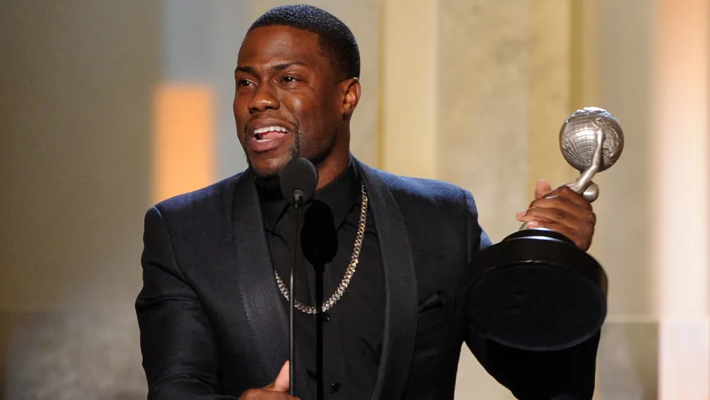

Accomplishments
Landing Accomplishments Interests
Awards
2012 Winner - Best actor.
2022 Winner - Outstanding actor.
2015 Winner - Comedic Genius Award.
44 years old.
2017 Winner - Favorite Comedic Movie Actor.

Other Accomplishments
Has a shoe deal with Nike.
Has a Radio station.
Marathons He ran.
First stand-up comedian to sell out a football stadium.
Has a Cold As Balls Show.